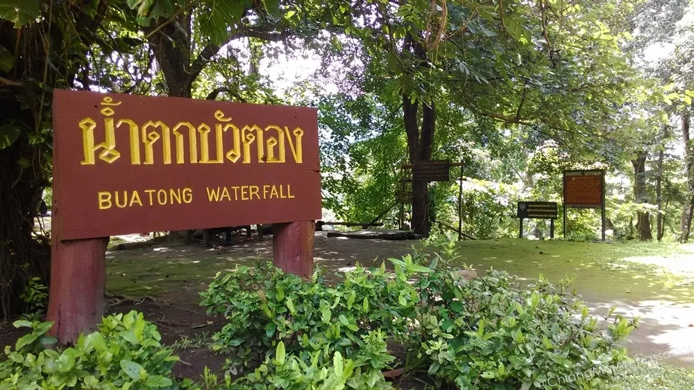

Bua Tong Waterfalls (also called Sticky Waterfalls) are one of the genuinely unusual natural attractions within day-trip distance of Chiang Mai. What makes them different from every other waterfall in the region is the surface. The limestone deposits covering the rocks create such high friction that visitors can walk and climb directly up the flowing water without slipping, even barefoot. It sounds implausible until you are standing on a waterfall with water running over your feet and realising the grip is genuine.
Located approximately 50 kilometres north of Chiang Mai in the Mae Taeng district, Bua Tong is accessible by motorbike, car, or chartered songthaew and makes for an excellent half-day trip when you want to get out of the city.
How to Get to Bua Tong Waterfalls
The route from Chiang Mai follows Highway 107 north toward Mae Taeng and Chiang Dao. The turn-off for Bua Tong is signed in Thai and English. The access road is navigable by standard motorbike and car. A 125cc scooter handles it without difficulty in dry conditions.
Drive time from central Chiang Mai is approximately 60 to 75 minutes depending on traffic on the northern highway. Morning departure is recommended to arrive before the day-tripper crowds, typically arriving around 10am on weekends.
If you do not have your own transport, a chartered red truck (songthaew) from Chiang Mai can do the return trip for around 600 to 900 THB for a small group. Negotiating a pickup time with the driver at the falls is essential if you charter this way.
The Sticky Waterfall Experience
The waterfalls flow over a limestone tufa surface formed over thousands of years by calcium carbonate deposits from the water itself. The same minerals that create the travertine terraces seen at Pamukkale in Turkey create the grippy white-orange surface at Bua Tong. The texture is porous and rough at the micro-scale, giving remarkable traction even when wet and flowing.
Visitors wade into the lower flow and walk or scramble upward through multiple tiers of cascading water. Ropes are installed on steeper sections to assist. The experience is genuinely fun and accessible to anyone with reasonable fitness. There is no technical climbing skill required for the main sections.
Wear clothes you do not mind getting thoroughly wet. Bring a change of dry clothes in a bag left at the entry area. Water sandals or bare feet work well on the limestone surface. Flip flops with smooth soles are the worst possible footwear as they catch on the rough surface and cause stumbles.
What to Bring
- A change of clothes. You will be completely wet from at least the waist down.
- Water sandals or old trainers. Avoid flip flops.
- Waterproof bag or dry bag for phone and valuables
- Water and snacks. Food vendors operate at the entry area but options are limited.
- Cash for the entry fee and parking.
Best Time to Visit
Bua Tong is worth visiting year-round, though the flow volume varies by season. During the rainy season (June to October), the waterfalls are fullest and the visual impact is highest. During dry season (November to May), the flow reduces but the walkable experience remains. Avoid visiting during or immediately after heavy rainfall when flow rates make the upper sections genuinely fast-moving and less safe to climb.
Weekdays are noticeably quieter than weekends. Saturday and Sunday mornings in peak tourist months (November to February) see the largest crowds. Weekday morning visits offer the falls without the school groups and tour buses.
Combining with Other Attractions
The road north toward Bua Tong passes several other points of interest. Mae Taeng elephant sanctuaries are in this direction, as are several riverside resorts and the approach to Chiang Dao mountain. A day that combines the sticky waterfalls with a visit to the Chiang Dao caves (further north on the same highway) makes a full and varied day trip from the city.
Key Takeaways
Key Takeaways
- Bua Tong (Sticky Waterfalls) are 50 km north of Chiang Mai. The limestone surface allows you to walk up the flowing waterfall.
- Drive time is 60 to 75 minutes via Highway 107 north. The route is accessible by motorbike.
- Wear clothes you do not mind getting wet. Bring a change. Water sandals or bare feet work best on the surface.
- Weekday morning visits avoid weekend crowds. Best flow is June to October.
- Combine with Chiang Dao caves for a full day trip north of the city.
Frequently Asked Questions
Why are Bua Tong called Sticky Waterfalls?
The limestone (travertine) deposits covering the rock surface create exceptionally high friction even when wet. The effect is genuinely sticky: your feet grip the surface rather than slipping off it. The calcium carbonate minerals deposited over thousands of years by the water create the same porous, textured surface seen at famous travertine formations elsewhere in the world.
Is it safe to climb the Bua Tong Waterfalls?
Yes for most people on the main climbing sections. Ropes are installed on steeper sections. The limestone grip is genuinely reliable. The main risk factors are wearing inappropriate footwear (smooth flip flops), attempting the uppermost sections during very high flow periods, and moving too fast on wet rock. Proceed at your own pace and use the ropes on steep sections.
How long should I budget for a visit to Bua Tong?
Plan 2 to 3 hours at the falls themselves including time to climb, rest at the top, and make your way back down. With drive time, a Bua Tong day trip from Chiang Mai takes 4 to 5 hours in total. Combining with Chiang Dao nearby makes it a full day.
Can I reach Bua Tong without a car or motorbike?
Yes, by chartering a red truck (songthaew) from Chiang Mai. Budget 600 to 900 THB for a small group for the return trip. Agree on a return pickup time with the driver before they leave. There is no regular bus service to the falls. Grab and other rideshare apps do not operate to this distance from the city.
What shoes should I wear at Bua Tong Waterfalls?
Water sandals with straps or bare feet are the best options. The limestone surface is porous and provides grip even barefoot. Avoid smooth-soled flip flops which catch on the rough texture and can cause stumbles. Avoid heavy lace-up shoes which become awkward when waterlogged. Old trainers that can get wet are a practical middle option.
Guru Tip
Pack your wet clothes separately on the way back. The limestone minerals in the water leave a white residue on clothing that looks like salt stains when dried. It washes out easily in a normal laundry cycle but if you pack wet and dry clothes together the residue transfers. A simple plastic bag for wet clothes saves your dry gear. On the way home, stop at one of the local restaurants on Highway 107 near Mae Taeng for a bowl of khao soi. The route back passes through some of the best Northern Thai food territory within an hour of the city.